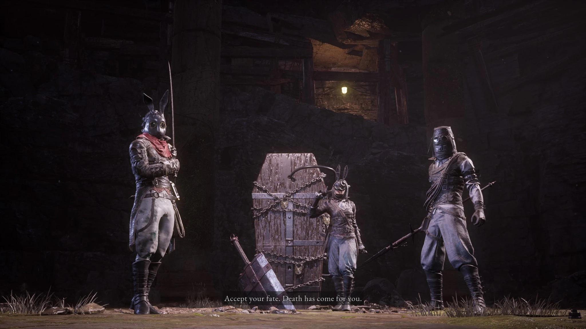

Black Rabbit Brotherhood
Seeking vengeance for their fallen leader, the remaining siblings ambush P deep within the Relic of Trismegistus. Unlike the first encounter, all three younger siblings attack simultaneously. Once their numbers dwindle, they unleash their ultimate trump card: the reanimated, Ergo-corrupted corpse of their Eldest brother.
Combat Tips
Use the garbage bags and obstacles in the arena to block the Battle Maniac's puppet string pulls. Focus on lowering all three siblings' health bars evenly before killing one; the reanimated Eldest spawns as soon as only one sibling remains. Taking out the last sibling immediately after the Eldest spawns ensures you can fight him 1-on-1. Backstabs are highly effective against the three humans.
Combat Stats
- Type: Human (Siblings) / Carcass (Eldest)
- Weakness: Acid (Siblings) / Fire (Eldest)
- Resistance: None
- Location: Relic of Trismegistus Combat Field
- Summon: Specter highly recommended for crowd control
- Drop: Quartz
The Brotherhood Roster (Round 2)
Youngest
Twin DaggersStill extremely fast, but now she fights alongside her brothers constantly. Backstab her when she focuses on your Specter.
Eccentric
Bucket SpearContinues to use wide sweeps and lunges. His electric damage can build up quickly if you get caught in a combo.
Battle Maniac
Dual Swords / Puppet StringThe most dangerous of the trio in a group fight. Keep an obstacle between you and him to break the line of sight for his grapple hook.
Reanimated Eldest
Corrupted GreatswordResurrected as a Carcass. He retains his Phase 1 moveset but now adds devastating Ergo shockwaves and inflicts Decay. Fire is highly effective.